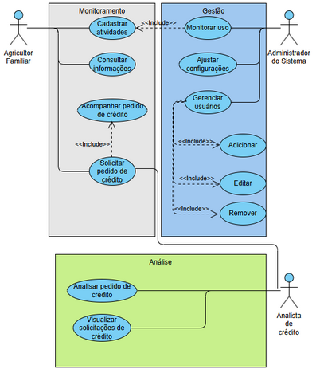
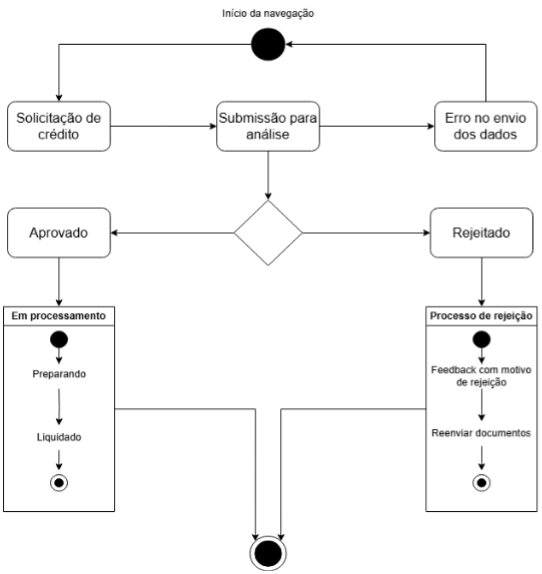
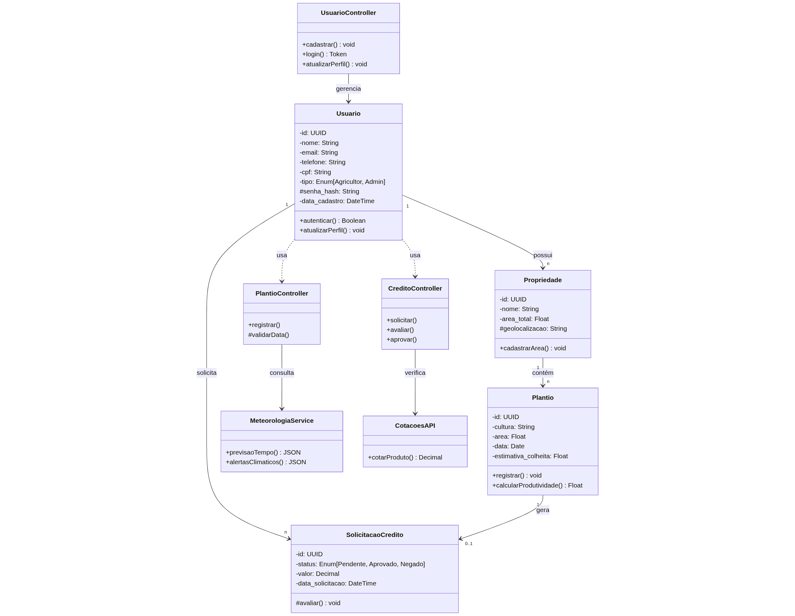

2. Representação Arquitetural
2.1. Definições
O sistema seguirá uma arquitetura em camadas, com o modelo arquitetural escolhido MVC (Model-View-Controller).
2.2. Justifique sua escolha.
Optamos por uma arquitetura baseada nos princípios do MVC com objetivo de manter nosso projeto devidamente organizado e visando a separação de responsabilidades, pois decidimos dividir nossa equipe em frontend e backend, então uma arquitetura que contribuísse com o sucesso de tal divisão é essencial.
Além disso, de acordo com as escolhas das tecnologias que vamos utilizar, presentes no tópico 1.4 do documento de visão: principalmente Django e React Native. Primeiro concluímos que como o Django já segue o modelo de arquitetura MVT (Model-View-Template), derivada do MVC, poderemos trabalhar com ele facilmente sem mudanças bruscas. Será principalmente por meio do Django que os conceitos de Model e Controller serão implementados. Segundo, concluímos que também conseguiremos aplicar bem essa arquitetura ao trabalhar com o React Native, já que por definição ele já cuida da interface do usuário (View).
Dessa forma, acreditamos que essa escolha será vantajosa para além da organização e separação, também esperamos que isso facilitará o desenvolvimento, manutenção, testes e possíveis alterações que ocorram no nosso projeto.
2.3. Detalhamento
A arquitetura escolhida para o desenvolvimento é o MVC (Model-View-Controller). O padrão MVC favorece a separação de responsabilidades, permitindo o desenvolvimento de interface, lógica de controle e gestão de dados. Então, assegurando as vantagens destacadas no item 2.2.
O modelo arquitetural MVC é composto de três componentes principais: Model, View e Controller. Esses elementos possuem papeis específicos, que relacionando com o aplicativo AgroRenda, são instanciados com funções diretamente ligadas às necessidades da ferramenta voltada à gestão de produção de atividades rurais.
O Model contém a lógica de negócio e é responsável pelo acesso e manipulação dos dados da aplicação. Ele concentra as regras de negócio e lida com o acesso e a persistência de informações, como registros de plantios, dados de produtividade, relatórios de crédito e dados de usuários. As requisições vindas do controller são recebidas pela Model gerando respostas a partir destas requisições.
A View é a camada encarregada da interface com o usuário, e no aplicativo, ela foi projetada com foco total em acessibilidade e usabilidade intuitiva. A interface conta com elementos visuais autoexplicativos, ícones representativos e textos reduzidos, tornando o uso acessível para pessoas com pouca familiaridade com a tecnologia. A View exibe informações de forma clara e simples, permitindo com que todas as funcionalidades sejam encontradas, mas sem executar qualquer lógica de processamento.
O Controller faz a ponte entre a View e o Model. Toda vez que o usuário realiza uma ação na interface como tocar no botão “Registrar Plantio”, a View encaminha esse evento ao Controller, que interpreta a solicitação, valida os dados, interage com o Model e retorna a resposta apropriada a View.

2.4. Metas e restrições arquiteturais
- Disponibilidade: O sistema deve visar uma disponibilidade de 99,5%, garantindo que os dados dos usuários estejam seguros, íntegros e acessíveis sempre que necessários.
- Padrões de codificação: O código deve seguir as melhores práticas de codificação para Python/ Django (PEP 8) e JavaScript/ React Native (MDN).
- Manutenibilidade: O sistema deve ser modular e possuir baixo acoplamento entre os componentes em visão de um projeto mais fácil de se manter e realizar alterações.
- Segurança: As APIs desenvolvidas no backend Django devem seguir as melhores práticas possíveis e passar em testes como aqueles definidos pelo OWASP.
-
Versionamento: O padrão usado para realizar mudanças no código e utilizar a ferramenta Git eficientemente será o Git Flow.
Todos os elementos supracitados contribuem para um desenvolvimento de software ágil e eficiente, onde todos os membros do projeto estão em sincronia na codificação e nas metas a serem alcançadas. Como objetivo final, essas metas e restrições ajudam a criar um produto final confiável e uma experiência agradável para o usuário.
2.5. Visão de Casos de uso (escopo do produto)
No escopo do projeto AgroRenda, o grupo optou por uma aplicação mobile voltada a atender as necessidades de pequenos produtores rurais para auxílio das atividades cotidianas, incluindo funcionalidades como: um sistema de login, sistema de registro e acompanhamento de atividades de produção; interface gráfica; acessibilidade.
Com as funcionalidades escolhidas, houve a criação de perfis e cenários nos moldes do escopo, a fim de corretamente atender às permissões e acessos reservados a cada um dos agentes abrangidos dentro do escopo do projeto, e à ordenação dos Sprints de maneira a facilitar a organização do projeto. Por fim, o grupo optou por incluir requisitos funcionais e não funcionais ao projeto, tendo cada um níveis de prioridade
Alguns dos requisitos que contribuíram para a escolha do modelo de arquitetura MVC foram a necessidade de separação clara entre regras de negócio, interface e manipulação de dados, como evidenciado pela presença de múltiplos perfis de usuários, como agricultor, administrador e analista de crédito. Cada um deles têm responsabilidades distintas dentro do sistema e essa divisão de responsabilidades favorece o uso do modelo de arquitetura MVC, uma vez que permite modularizar melhor as funcionalidades, garantindo que mudanças na interface não afetem a lógica do sistema.
Outro fator que influenciou na escolha do modelo de arquitetura MVC foi a separação da equipe em backend, que usará o Django, e o frontend, que fará as atividades usando o React. O modelo de arquitetura MVC também favorece a divisão de responsabilidades e a prática de Extreme Programming, XP, oferece uma proposta que engloba desenvolvimento incremental, testes e refatoração de forma contínua, que cabe bem na organização em camadas do MVC

2.6. Visão lógica
Como mencionado previamente, o sistema AgroRenda é organizado em módulos seguindo o padrão MVC (Model-View-Controller), com foco em usabilidade para agricultores familiares. Abaixo está a estrutura lógica detalhada:
2.6.1. Módulos do Sistema
-
A. Módulo de Autenticação
- Razão Lógica: Gerencia cadastro, login e segurança (criptografia de senhas).
- Componentes:
- Model: User (dados do usuário).
- View: Telas de login/cadastro.
- Controller: AuthController (valida credenciais, gerencia sessões).
-
B. Módulo de Gestão Agrícola
- Razão Lógica: Permite registrar e acompanhar atividades (plantio, colheita e vendas).
- Componentes:
- Model: Production, Crop, Livestock.
- View: Telas de formulários e relatórios.
- Controller: ProductionController (CRUD de atividades).
-
C. Módulo de Crédito Rural
- Razão Lógica: Facilita solicitação e acompanhamento de crédito.
- Componentes:
- Model: CreditRequest
- View: Formulários de solicitação e status.
- Controller: CreditController (integra com APIs de análise).
-
D. Módulo de Conteúdo Educacional
- Razão Lógica: FAQs para capacitação.
- Componentes:
- Model: EducationalContent
- View: Listagem de FAQs.
- Controller: ContentController (intermedia a comunicação entre o modelo e a visualização do conteúdo educacional).
-
E. Módulo de Administração
- Razão Lógica: Gerencia usuários e configurações do sistema.
- Componentes:
- Model: AdminSettings
- View: Painel de administração.
- Controller: AdminController (atribui perfil analista).
2.6.2. Comunicação entre Módulos (Interfaces)
- APIs REST: Backend (Django) expõe endpoints como /api/production para o frontend (React Native).
- Eventos: Solicitação de crédito gera notificação para o módulo de administração.
- Banco de Dados: SQLite compartilhado entre módulos (como por exemplo: tabela users usada por autenticação e administração).
2.6.3. Diagrama de Estados
A seguir, temos ilustrado o diagrama de estados da aplicação, que representa o ciclo de vida das solicitações de crédito no sistema AgroRenda. Este diagrama demonstra os diferentes estágios do processo - desde a submissão inicial até a aprovação ou rejeição final - bem como as condições que determinam as transições entre esses estados. Através desta representação visual, é possível compreender o fluxo completo de funcionamento desta funcionalidade central do sistema, incluindo os caminhos alternativos que podem ocorrer durante a análise das solicitações.

2.6.4. Diagrama de Atividades
Complementando a visão geral do sistema, o diagrama de atividades apresentado detalha o fluxo operacional completo da aplicação, demonstrando passo a passo as interações do usuário e as respostas do sistema em cada estágio do processo. O diagrama esclarece tanto o fluxo principal de registro de plantio quanto todos os caminhos alternativos que podem ocorrer durante a utilização da plataforma, incluindo tratamentos de erro, validações automáticas e processos paralelos que garantem o funcionamento integrado do AgroRenda. Através desta representação visual, se torna mais evidente como o sistema se comporta em diferentes cenários de uso, desde condições ideais até situações excepcionais que demandam intervenções específicas.

2.6.5. Diagrama de Classes
O diagrama de classes apresentado a seguir ilustra a estrutura básica do sistema AgroRenda, mostrando os principais componentes e como eles se relacionam entre si. Essa representação permite visualizar os elementos fundamentais que compõem a aplicação, incluindo as entidades principais, suas características e as conexões existentes.

2.7. Visão de Implementação
2.7.1. Camada de Apresentação
A camada de apresentação do sistema AgroRenda é responsável por garantir a comunicação visual e interativa entre o usuário final, como agricultores familiares, técnicos e analistas, e as funcionalidades oferecidas pela aplicação. O sistema será desenvolvido utilizando React com o framework Expo(javascript), proporcionando uma interface moderna, responsiva e voltada para o uso de dispositivos móveis.
Essa camada será responsável por interagir diretamente com os usuários do sistema, permitindo que agricultores familiares, técnicos e analistas acessem funcionalidades essenciais como autenticação, registro de atividades agrícolas, solicitação de crédito, consulta de informações técnicas e geração de relatórios de produtividade, por meio de uma interface acessível, responsiva e adaptada à realidade digital dos pequenos produtores.
No projeto, a interface do usuário foi desenvolvida com componentes React, substituindo os templates HTML. Esses componentes, combinados com arquivos de estilo (CSS), scripts em JavaScript e elementos visuais como imagens e ícones, formam a base visual da aplicação, aproveitando os recursos oferecidos pelo Expo para uma integração eficiente e moderna.
A estrutura da interface foi organizada de maneira modular, com uma divisão clara entre os componentes reutilizáveis, as telas principais, os arquivos estáticos e os serviços de comunicação com o back-end. Essa forma de organizar o código torna o sistema mais limpo, fácil de manter e pronto para crescer com novas funcionalidades no futuro
2.7.1.1. Estrutura da Interface
A camada está organizada nos seguintes diretórios principais:
-
screens/: Contém as telas funcionais que representam cada uma das seções do aplicativo, como:
-
HomeScreen.js: Tela inicial com informações introdutórias e tutorial de uso.
- LoginScreen.js, RegisterScreen.js: Telas de autenticação do usuário.
- RecoverAccountScreen.js: Página para solicitar o envio de um e-mail de recuperação de senha.
- RedefinePasswordScreen.js: Página para redefinição de senha.
- DashboardScreen.js: Painel principal para o agricultor acompanhar sua produção.
- CreditRequestScreen.js: Tela de solicitação e acompanhamento de crédito para o agricultor .
- ReportsScreen.js: Tela de visualização dos relatórios de produtividade e histórico para o agricultor.
- FaqScreen.js: Página de perguntas frequentes.
-
CreditAnalystScreen.js: Tela de análise das solicitações de crédito pelo analista financeiro.
-
components/: Contém componentes reutilizáveis como botões, cards, gráficos, inputs e menus.
-
assets/: Contém recursos estáticos como:
-
img/: Ícones, logotipos e ilustrações.
- fonts/: Fontes personalizadas.
-
videos/: Tutoriais explicativos.
-
styles/: Contém os estilos visuais utilizados pelos componentes e telas.
-
services/: Camada responsável por realizar as requisições HTTP à API back-end construída em Django REST Framework, como login, envio de formulários e recuperação de dados.
2.7.1.2. Comunicação com o Back-End
A comunicação entre o front-end e o back-end será feita por meio de requisições HTTP, garantindo uma integração segura e eficiente com os dados gerenciados pela API do Django. O Django, por sua vez, se conectará a um banco de dados SQLite, onde todas as informações da aplicação serão armazenadas e gerenciadas de forma segura e escalável.
2.7.2. Lógica e Regras de Negócios
Essa camada é responsável pelas regras que definem como o sistema funciona e como ele se comunica com os usuários e os dados. No AgroRenda, ela abrange as principais funcionalidades que ajudam na gestão da produção agrícola e no acesso ao crédito. Também garante que o sistema seja seguro e fácil de usar. As regras de negócio são implementadas nos modelos de dados e nas rotinas que executam as operações do sistema, validando as informações e assegurando que tudo funcione da forma correta. Abaixo, são detalhadas as principais áreas da lógica de negócios implementadas.
2.7.2.1. Modelos:
- Usuário (Agricultor, Administrador, Analista de Crédito): A aplicação define perfis distintos, cada um com permissões específicas.
- Atividades de Produção: Modelo que armazena informações sobre cultivos, colheitas, vendas e outras atividades relacionadas à produção rural.
- Solicitações de Crédito: Estrutura que gerencia os pedidos realizados pelos agricultores, acompanhando o status e permitindo a análise pelo Analista de Crédito.
2.7.2.2. Formulários:
-
Cadastro e Login: A lógica implementa validações de campos obrigatórios, verificação de unicidade por meio do e-mail e segurança por meio de criptografia de senhas.
-
Gestão da Produção: Formulários intuitivos permitem que agricultores registrem, editem ou excluam atividades produtivas, com campos padronizados para garantir a consistência das informações.
-
Solicitação de Crédito: Formulário estruturado para envio de informações essenciais ao pedido, como tipo de cultivo, produtividade estimada e necessidade de financiamento.
2.7.2.3. Recuperação de Conta:
- Fluxo de Recuperação: Está prevista a possibilidade de redefinição de senha por meio de validação de dados de autenticação.
2.7.2.4. Controle de Acesso:
-
Permissões de Perfis: Cada perfil possui permissões definidas:
-
Agricultor: registro e acompanhamento de produção, solicitação de crédito, solicitação de ajuda técnica.
-
Administrador: gerenciamento geral do sistema.
-
Analista: análise de solicitações de crédito.
-
Fluxo de Acesso: Utiliza middleware ou decorators para garantir que o usuário tenha as permissões necessárias para acessar determinadas rotas ou funcionalidades.
2.7.3. Comunicação com o Banco de Dados
A comunicação com o banco de dados no sistema AgroRenda é realizada através do Django ORM, proporcionando uma interface de alto nível para interação com os dados, sem a necessidade de escrever consultas SQL manualmente.
2.7.3.1. Estrutura do Banco de Dados:
O banco de dados armazena informações essenciais para a operação da aplicação, com destaque para:
- Usuários e Perfis: Cada usuário possui atributos como nome, e-mail, e permissões específicas associadas a seu perfil (Agricultor, Administrador, Analista).
- Dados de Produção: Registros das atividades agrícolas como plantio, colheita, e vendas, permitindo o acompanhamento e a geração de relatórios produtivos.
- Solicitações de Crédito: Armazena os dados relacionados às solicitações feitas pelos agricultores e as análises realizadas pelos analistas.
O Django ORM gerencia automaticamente a criação das tabelas e colunas a partir dos modelos Python definidos, realizando migrações conforme alterações no esquema de dados.
2.7.3.2. Operações com o Banco de Dados:
-
Criação: Ao registrar um novo usuário ou atividade, os dados são adicionados ao sistema e armazenados no banco de dados por meio dos métodos .add() e .save(), garantindo que as informações sejam armazenadas corretamente.
-
Leitura: As informações são recuperadas utilizando métodos como .filter(), .get() e .all(), permitindo consultar, por exemplo, todas as atividades de um agricultor ou os pedidos de crédito pendentes.
- Atualização: Para modificar informações, como atualização de status de uma solicitação de crédito, utiliza-se o método .update() ou atribuições diretas seguidas de .save().
- Exclusão: A exclusão de registros pode ser realizada com o método .delete().
2.7.3.3. Validações e Integridade:
O Django fornece validações automáticas de tipo e integridade referencial:
- Validação de campos obrigatórios: E-mail e senha.
- Relacionamentos entre modelos: Um agricultor vinculado a várias Atividades de Produção.
- Integridade transacional: Garantir que operações complexas sejam atômicas.
2.7.3.4. Consultas Simples e Complexas:
- Consultas Simples: Recuperação, por exemplo, de todas as atividades de um agricultor em determinada safra.
- Consultas Agregadas: Cálculo de produtividade média, total de vendas ou volume de crédito solicitado.
2.7.3.5. Padrão de Desenvolvimento:
- A lógica de negócio segue o padrão MTV (Model-Template-View) do Django, promovendo uma separação clara entre a modelagem de dados, a lógica de aplicação e a interface com o usuário.
- O banco de dados utilizado será SQLite, conforme especificado no documento, garantindo robustez, segurança e suporte a operações complexas como consultas geoespaciais, caso necessário.


2.8. Visão de Implantação
Como já discutimos em alguns tópicos, serão utilizadas as tecnologias React Native com framework Expo para o desenvolvimento da interface, na linguagem JavaScript, atendendo nossos requisitos para implementação de uma interface para celulares. Para o backend utilizamos Django com Django Rest Framework, na linguagem Python, por meio de APIs RESTful interagimos com a interface e mantemos responsabilidades separadas de acordo com nossa arquitetura. O banco de dados em PostgreSQL, pois é muito robusto, provendo performances e funcionalidades que atendem nosso projeto. Faremos integração por meio do Django ORM (Object-Relational Mapper), de forma a simplificar interações com o banco de dados. Essas tecnologias e outras menos relevantes também são citadas no nosso documento de visão.
2.9. Restrições adicionais
Este aplicativo foi projetado para atender a uma série de restrições adicionais que garantem sua qualidade, segurança, facilidade de uso e adequação ao público de pequenos produtores rurais. A seguir, são descritas essas restrições de forma objetiva.
2.9.1. Facilidade de uso
O aplicativo será utilizado por pequenos produtores, muitos deles com pouca familiaridade com tecnologia. As telas devem ter uma linguagem clara, botões destacados e fluxos de navegação diretos.
Segundo a norma ISO 9241-210 (INTERNATIONAL ORGANIZATION FOR STANDARDIZATION, 2010), sistemas voltados para usuários não especializados devem priorizar a facilidade de aprendizado e a eficiência no uso. Por isso, o tempo médio para aprender a utilizar o aplicativo deve ser de, no máximo, 30 minutos.
2.9.2. Segurança dos dados
Como o aplicativo irá coletar dados das plantações e informações pessoais dos produtores, é essencial proteger essas informações. Todo envio de dados será realizado com conexão segura, utilizando técnicas de criptografia. O acesso será feito mediante senha pessoal, evitando o uso não autorizado.
Essas medidas seguem boas práticas de segurança recomendadas pela Open Web Application Security Project – OWASP (2023) para aplicativos móveis.